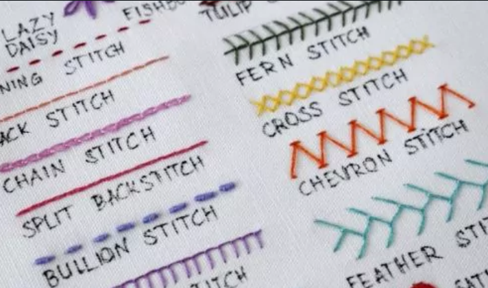
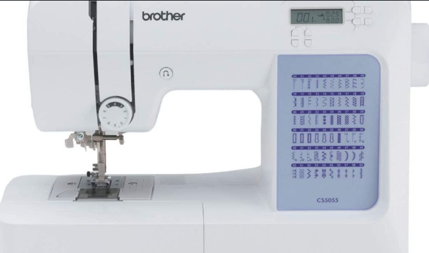
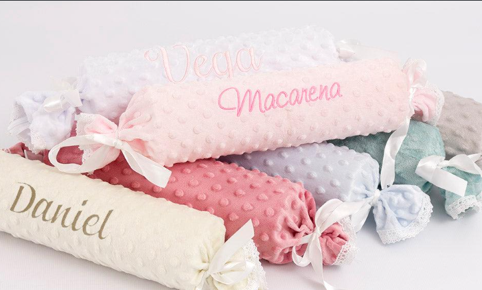
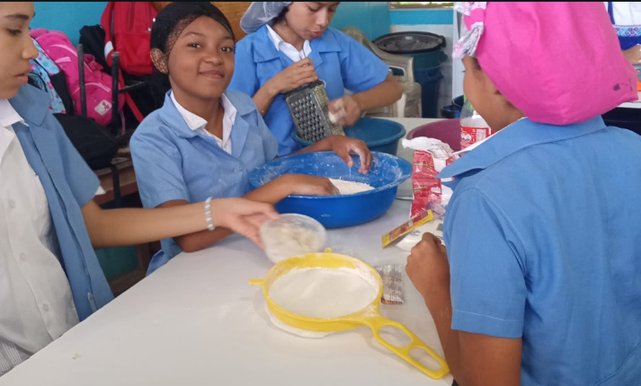
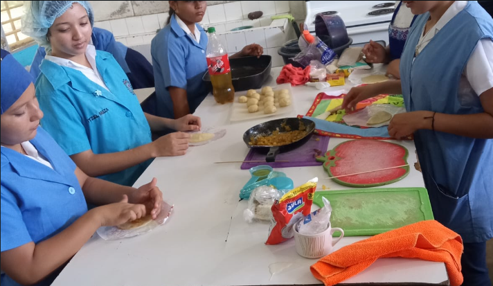

El área de Educación para el Hogar está diseñada para brindar a los estudiantes competencias prácticas fundamentales para la vida diaria y el desarrollo de la autonomía personal. El taller se divide de manera integral en dos grandes disciplinas básicas: el arte de la confección textil y los fundamentos culinarios.
A través de proyectos dinámicos y guiados, los alumnos de tercer ciclo aprenden el uso seguro de utensilios, la planificación de recursos, la importancia de la nutrición y el valor del trabajo hecho a mano. Estas prácticas fomentan la creatividad, la organización y el trabajo en equipo, preparando a los jóvenes tanto para el ámbito familiar como para futuros emprendimientos locales.

Introducción al manejo de agujas, hilos y telas. Los alumnos aprenden los puntos de sutura tradicionales hechos a mano para hilvanar, reparar prendas y pegar botones correctamente.
Reconocimiento de las partes de la máquina de coser familiar y prácticas guiadas para dominar el enhebrado, el llenado de bobinas y el control del pedal en líneas rectas.


Aplicación de los conocimientos en el trazado de patrones sencillos sobre tela para cortar y confeccionar artículos utilitarios del hogar, tales como gabachas, manteles o almohadones.
Estudio obligatorio sobre las normas sanitarias en la cocina, el lavado correcto de manos, la desinfección de alimentos y la prevención de quemaduras o accidentes con cuchillos.


Prácticas elementales de medición de ingredientes (tazas, cucharadas) y elaboración de recetas sencillas que no requieran técnicas complejas, como ensaladas, aderezos y meriendas saludables.
Introducción al horneado casero mediante la preparación de masas simples, galletas, panecillos tradicionales o panqueques, enfocándose en la química básica de los leudantes.
Docente especialozada en el area de Corte y Confeccion,docente decidida a enseñar y guiar a los estudiantes de el area de Corte y Confeccion.
Docente especialozada en el area de Cocina,docente decidida a enseñar y guiar a los estudiantes de el area de Cocina.